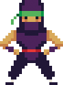
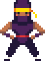

Poznaj Nanonautów
Jesteśmy Nanonatami
Nazywamy się Hania, Daria, Daniel i Adam.

Daniel - urodzony wokalista

Daniel jest wokalistą Nanonautów. Śpiewa bez przerwy, nie tylko wtedy, gdy występuje z Nanonatami! Jego rodzice twierdzą, że nauczył się śpiewać, zanim zaczą mówić!
Daniel gra też na klarnecie i uczy się gry na saksofonie altowym.
Adam - człowiek perkusja

Adam odziedziczył zamiłowanie do muzyki po rodzicach. Oboje grają na instrumentach i kupili mu pierwszą perkusję, gdy miał zaledwie pięć lat, co doprowadziło do licznych konfliktów z sąsiadami. Podczas wykonywaniach niektórych utworów gra na gitarze basowej, a innych - na perkusji. Adam uwielbia grać z nanonautami, ale nie cierpi transportować perkusji...
Hania - jeśli cos ma struny, to da się na tym grać!

Gitara akustyczna? Gitara elektryczna? Ukulele? Harfa? Hania potrafi grać na nich wszystkich.
Daria - mistrzyni klawiatury

Daria gra na fortepianie, ale potajemnie woli grać na klawiszach elektrycznych. Uwielbia brzmienie sytezatorów i przekomarza się z Hanią, która z nich powinna odpowiadać za partię basu.